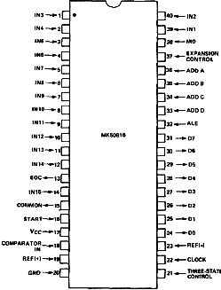

Nascom Journal |
Dezember 1981 · Ausgabe 11/12 |
Das Herz dieser Schaltung ist der IC MK-50816 von Mostek (Preis : ca. 30 DM), der einen 8-Bit Analog/Digital-Wandler und einen 16-Kanal-Analogmultiplexer enthält. Die Analogeingänge sind mit je einem Operationsverstärker gepuffert, die Digitalausgänge und die Steuereingänge sind direkt mit dem Nascom über 2 PIO-Ports verbunden.
Der Umwandlungsvorgang läuft nun so ab, daß zuerst über Bit 0 bis 3 des Ports A die Adresse des gewünschten Analogeinganges an den A/D-Wandler übergeben wird. Dann wird ALE (Adress Latch Enable) und START (Bit 5 und 6 von Port A) auf logisch High gesetzt. Dadurch wird die angelegte Adresse in den Decoder des Multiplexers übernommen und der entsprechende Kanal wird durchgeschaltet, so daß die zu messende Spannung am COMMON-Ausgang des Multiplexers und am Comparator-Eingang des Wandlers anliegt.
Wenn nun START wieder auf Low gesetzt wird, läuft der eigentliche Wandlungsvorgang an und gleichzeitig geht der EOC-Ausgang (End of Conversion) auf Low, bis die Umwandlung abgeschlossen ist. In einer Abfrageschleife wird abgewartet, bis der EOC-Ausgang wieder auf High geht. Wenn nun der TRS-Eingang (Three-State) auf High gesetzt wird, werden die Datenausgänge vom hochohmigen in den aktiven Zustand gebracht, und die Daten können über den Port B der PIO in den Nascom übernommen werden.
Man kann noch zwei Ausgänge des Ports A einsparen, wenn man TRS fest an +5 Volt legt, d.h. die Datenausgänge des A/D-Wandlers sind immer aktiv, und wenn man ALE und START miteinander verbindet und mit nur einem Ausgang von Port A gleichzeitig ansteuert.
Der A/D-Wandler verfügt über einen internen Taktgenerator, der in Gang gesetzt wird, wenn man den CLOCK-Eingang auf Gnd legt, was in der hier beschriebenen Schaltung der Einfachheit halber auch gemacht wurde. Laut Datenblatt kann man jedoch einen externen Taktgenerator von ca. 640 kHz an den CLOCK-Eingang anschließen und kann damit die eigentliche Umwandlungszeit von ca. 150µS auf 108µS verkürzen.
Zwischen die Ausgänge des A/D-Wandlers und die PIO sind Widerstände eingefügt, um in dem Fall, daß die PIO-Eingänge versehentlich auf Datenausgabe gesetzt wurden, einen Kurzschluß zu verhindern.
An die Referenzspannungseingänge REF+ und REF- wird die höchste und die niederste zu messende Spannung angelegt, es sind jedoch nur Spannungen zwischen 0 und +5 Volt zulässig. Will man z.B. ohne die Eingangsverstärker messen, können die Referenzspannungseingänge direkt an Gnd und Vcc gelegt werden und dann kann man den gesamten Messbereich von 0 bis +5 Volt erfassen. Die vorgeschalteten Operationsverstärker können zwar noch sehr hochohmige Spannungsquellen erfassen, sind aber nicht über den gesamten Spannungsbereich linear. Deshalb kann man nur den linearen Übrtragungsbereich von ca. 1 bis 4 Volt benützen und dazu kann man mit den beiden Potentiometern die Referenzspannungen einstellen.
Die Analoganschlüsse erfolgen über 16 Schraubklemmen, zusätzlich können noch Schraubklemmen für Gnd und Vcc eingelötet werden . Geätzte Platinen (100 x 160 mm) können gegen Unkostenerstattung gerne abgegeben werden.
Das Register A enthält vor dem Aufruf die Adresse des Kanales, nach dem Aufruf den
| Seite 29 von 55 |
|---|